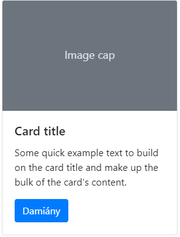

By Marosak
Style stolen from 1T0S_
Úprava textu:
Krátká kapitola na úvod Bootstrapu
Bootstrap je Frontend CSS Framework pro development responzivních webů s mobile-first přístupem.
Jedná se o obrovskou kolekci recyklovatelných částí kódu z HTML, CSS a Javascriptu, takže je možné velice jednoduše (CTRL+C, CTRL+V ehm) tvořit kompletně responzivní weby.
Další cool věc je, že je celý zdarma. Pokud ale nechceš dělat CTRL+C CTRL+V metodu, můžeš využít aplikace, jako je například Bootstrap Studio, které podporuje Drag&Drop. To ale není zdarma, pokud nemáš Github Student Pack.
Bootstrap je celý založený na CTRL+C, CTRL+V designu. V dokumentaci, která je buď na webu nebo offline, stačí vyhledat element nebo skupinu elementů, kterou chci použít, najít vhodný snippet kódu a zkopírovat k sobě do dokumentu.
Veškerý design elementů je v CSS souborech a pomocí class se pak celkem jednoduše dá nadesignovat jakkoliv je potřeba.
Příklad snippetu buttonu v Bootstrapu:
<button type="button" class="btn btn-primary">Damiány</button>Layout Bootstrapu je celý pomocí responzivního grid systemu. Nejdůležitější element pro tvorbu layoutu je Container.
Container má 3 typy
|
Extra small <576px |
Small ≥576px |
Medium ≥768px |
Large ≥992px |
Extra large ≥1200px |
|
|---|---|---|---|---|---|
.container |
100% | 540px | 720px | 960px | 1140px |
.container-sm |
100% | 540px | 720px | 960px | 1140px |
.container-md |
100% | 100% | 720px | 960px | 1140px |
.container-lg |
100% | 100% | 100% | 960px | 1140px |
.container-xl |
100% | 100% | 100% | 100% | 1140px |
.container-fluid |
100% | 100% | 100% | 100% | 100% |
Příklady použití jednotlivých containerů:
<div class="container">
<!-- Content here -->
</div>
<div class="container-fluid">
<!-- Content here -->
</div>
<div class="container-sm">100% šířka po small breakpoint</div>
<div class="container-md">100% šířka po medium breakpoint</div>
<div class="container-lg">100% šířka po large breakpoint</div>
<div class="container-xl">100% šířka po extra large breakpoint</div>
Grid v bootstrapu využívá vesměs sérii containerů, rows a columns na alignování contentu. Je vytvořen pomocí flexboxů a je zcela responzivní.
Příklad vytvoření gridu pomocí těch věcí. Stejně jako u containeru, i columns mají různé nastavení pomocí breakpointů.
<div class="container">
<div class="row">
<div class="col-sm">
One of three columns
</div>
<div class="col-sm">
One of three columns
</div>
<div class="col-sm">
One of three columns
</div>
</div>
</div>
A takhle to dopadne
Další možnost, kterou columns nabízejí, je specifikace šířky.
<div class="container">
<div class="row">
<div class="col">
1 of 3
</div>
<div class="col-6">
2 of 3 (wider)
</div>
<div class="col">
3 of 3
</div>
</div>
<div class="row">
<div class="col">
1 of 3
</div>
<div class="col-5">
2 of 3 (wider)
</div>
<div class="col">
3 of 3
</div>
</div>
</div>
Což vypadá takhle

Mobile-first přístup znamená, že se webovky designované Bootstrapem snaží dávat vývoj layoutu pro mobilní zařízení na první místo, jako by se jednalo o desktopy.
Toho docílí pomocí media queries, díky kterým vytváří sérii breakpointů pro layout a interfacy. Tyto breakpointy jsou based na minimální šířce viewportů zařízení a podle nich se scalují elementy webu.
Media queries jsou definované v CSS Bootstrapu, takže si je člověk může upravit, yay.
// Extra small devices (portrait phones, less than 576px)
// No media query for `xs` since this is the default in Bootstrap
// Small devices (landscape phones, 576px and up)
@media (min-width: 576px) { ... }
// Medium devices (tablets, 768px and up)
@media (min-width: 768px) { ... }
// Large devices (desktops, 992px and up)
@media (min-width: 992px) { ... }
// Extra large devices (large desktops, 1200px and up)
@media (min-width: 1200px) { ... }
Jednou z věcí, kterou Bootstrap využívá pro alignování contentu je z-index. Používá se k alignování věcí na 3. ose pro komponenty, jako jsou tooltips, popovers, modals a další komponenty, které překrývají jiné komponenty.
Doporučují neměnit tyto hodnoty, protože by se to rozbilo.
Bootstrap má hodně předdefinovaných komponentů, které stačí jen jednoduše zkopírovat z dokumentace. Jo, fakt. Nevím jako co u té maturity máme k tomuhle napsat, ale cool I guess.
Příklady některých komponentů:
Karta
<div class="card" style="width: 18rem;">
<img src="..." class="card-img-top" alt="...">
<div class="card-body">
<h5 class="card-title">Card title</h5>
<p class="card-text">Some quick example text to build on the card title and make up the bulk of the card's content.</p>
<a href="#" class="btn btn-primary">Damiány</a>
</div>
</div>

trošku větší komponent, Navbar
<nav class="navbar navbar-expand-lg navbar-light bg-light">
<a class="navbar-brand" href="#">Navbar</a>
<button class="navbar-toggler" type="button" data-toggle="collapse" data-target="#navbarSupportedContent" aria-controls="navbarSupportedContent" aria-expanded="false" aria-label="Toggle navigation">
<span class="navbar-toggler-icon"></span>
</button>
<div class="collapse navbar-collapse" id="navbarSupportedContent">
<ul class="navbar-nav mr-auto">
<li class="nav-item active">
<a class="nav-link" href="#">Home <span class="sr-only">(current)</span></a>
</li>
<li class="nav-item">
<a class="nav-link" href="#">Link</a>
</li>
<li class="nav-item dropdown">
<a class="nav-link dropdown-toggle" href="#" id="navbarDropdown" role="button" data-toggle="dropdown" aria-haspopup="true" aria-expanded="false">
Dropdown
</a>
<div class="dropdown-menu" aria-labelledby="navbarDropdown">
<a class="dropdown-item" href="#">Action</a>
<a class="dropdown-item" href="#">Another action</a>
<div class="dropdown-divider"></div>
<a class="dropdown-item" href="#">Something else here</a>
</div>
</li>
<li class="nav-item">
<a class="nav-link disabled" href="#" tabindex="-1" aria-disabled="true">Disabled</a>
</li>
</ul>
<form class="form-inline my-2 my-lg-0">
<input class="form-control mr-sm-2" type="search" placeholder="Search" aria-label="Search">
<button class="btn btn-outline-success my-2 my-sm-0" type="submit">Search</button>
</form>
</div>
</nav>
Pokud chceš něco upravit, jako třeba alignement nebo tak něco, můžeš využít sadu Bootstrap utilit.
Opět, všechno je vysvětlené a popsané ze vším všudy v dokumentaci bootstrapu.
Ale i tak, pro příklad, Float utilita:
<div class="float-left">Float left on all viewport sizes</div><br>
<div class="float-right">Float right on all viewport sizes</div><br>
<div class="float-none">Don't float on all viewport sizes</div>
Ikony Font awesome
Animace pomocí wow.js
Grafy pomocí chart.js